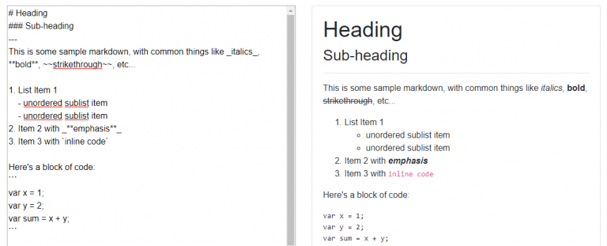

Safely Rendering Markdown in Blazor
This week I added the ability to post and properly display markdown content in my Blazor (server-side Blazor, actually… Razor Components) project. Markdown is a lightweight, standardized way of formatting text without having to resort to HTML or depend on a WYSIWYG editor. There’s a nice markdown quick reference here.
Leveraging the Work of Others
My need was simple: display formatted markdown on one screen that was saved as plain text on another. Accomplishing this was almost as simple, thanks to the work of those who have gone before me. I used two libraries:
- Markdig – “a fast, powerful, CommonMark compliant, extensible Markdown processor for .NET.”
- HtmlSanitizer – “a .NET library for cleaning HTML fragments and documents from constructs that can lead to XSS attacks.”
I also drew from Ed Charbeneau’s fantastic work on BlazeDown, an experimental markdown editor he wrote using Blazor. He first built it back when Blazor was on release 0.2, and he had to do a little extra work to get it to work due to some deficiencies in Blazor at the time (namely, the inability to render raw HTML). The Blazor team added MarkupString for rendering raw HTML with release 0.5, which made the task of rendering markup much simpler. He revisited BlazeDown with release 0.5.1 of Blazor, and updated the project to use the new feature.
This Example
What I’ll show here is just enough code to meet the requirements that I had in my project – simply render a string of in-memory markdown as HTML on the screen and do it safely (more on that later).
The code for this short sample can be found here.

MarkdownView Component
Part of the power of Blazor is the ability to componentize commonly used controls and logic for easy reuse. I created a MarkdownView Blazor component that is responsible for safely rendering a string of markdown as HTML.
MarkdownView is just two lines:
@inherits MarkdownModel
@HtmlContent
The corresponding MarkdownModel is as follows:
public class MarkdownModel: BlazorComponent
{
private string _content;
[Inject] public IHtmlSanitizer HtmlSanitizer { get; set; }
[Parameter]
protected string Content
{
get => _content;
set
{
_content = value;
HtmlContent = ConvertStringToMarkupString(_content);
}
}
public MarkupString HtmlContent { get; private set; }
private MarkupString ConvertStringToMarkupString(string value)
{
if (!string.IsNullOrWhiteSpace(_content))
{
// Convert markdown string to HTML
var html = Markdig.Markdown.ToHtml(value, new MarkdownPipelineBuilder().UseAdvancedExtensions().Build());
// Sanitize HTML before rendering
var sanitizedHtml = HtmlSanitizer.Sanitize(html);
// Return sanitized HTML as a MarkupString that Blazor can render
return new MarkupString(sanitizedHtml);
}
return new MarkupString();
}
}
This is a good simple example to demonstrate a few different concepts. First, I’ve specified a service to inject into the component on instantiation, HtmlSanitizer. We’ll discuss this more in a bit, but for now just know that it is a dependency registered with the IoC container.
Second, I’ve specified a parameter, Content, that is bound to a to a property on the model of parent view. This is how I pass a string of markdown into this component.
Third, I’ve exposed an HtmlContent property of type MarkupString. This is the property that will expose the string of markdown converted to a string of HTML that this component will display.
When Content is set, I use a function ConvertStringToMarkupString(..) to convert the string to HTML, sanitize the string of HTML, and return it as a MarkupString.
Usage of the component consists of simply binding it to a string that we want to render:
<MarkdownView Content="@MarkdownContent"/>
Be Safe – Sanitize Your HTML
It’s important to sanitize any user-supplied HTML that you will be rendering back as raw HTML to prevent malicious users from injecting scripts into you app and making it vulnerable to cross-site scripting (XSS) attacks. For this task, I use HtmlSanitizer, an actively-maintained, highly-configurable .NET library. I already showed above how it is injected and used in my MarkdownView component. The only remaining piece is the registration of the HtmlSanitizer with my IoC container in the ConfigureServices method in my Startup class:
services.AddScoped<IHtmlSanitizer, HtmlSanitizer>(x =>
{
// Configure sanitizer rules as needed here.
// For now, just use default rules + allow class attributes
var sanitizer = new Ganss.XSS.HtmlSanitizer();
sanitizer.AllowedAttributes.Add("class");
return sanitizer;
});
By making the sanitation of the HTML a part of the MarkdownView component’s logic, I ensure that I won’t forget to sanitize a piece of content as long as I always use the component to render my markdown. It’s also wise to sanitize markdown and HTML on ingress prior to writing it to storage.
Wrapping Up
This was a pretty short example demonstrating how to add a feature that can have a big impact. The tools available to us in Blazor and a couple of existing libraries made this a pretty simple task, which is one of the reasons I’m so excited about Blazor: the ability to leverage existing .NET libraries directly in the browser directly translates to a number of significant benefits including faster delivery times, smaller codebases, lower total cost of ownership, etc…
Thanks for reading!
–Jon